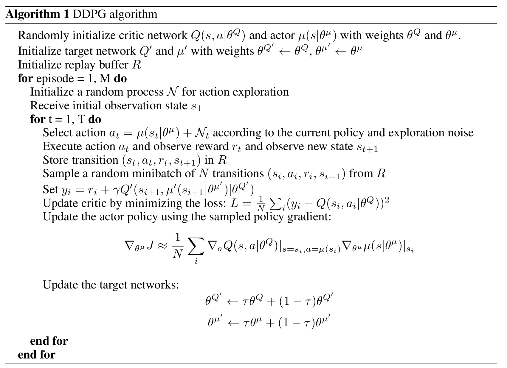
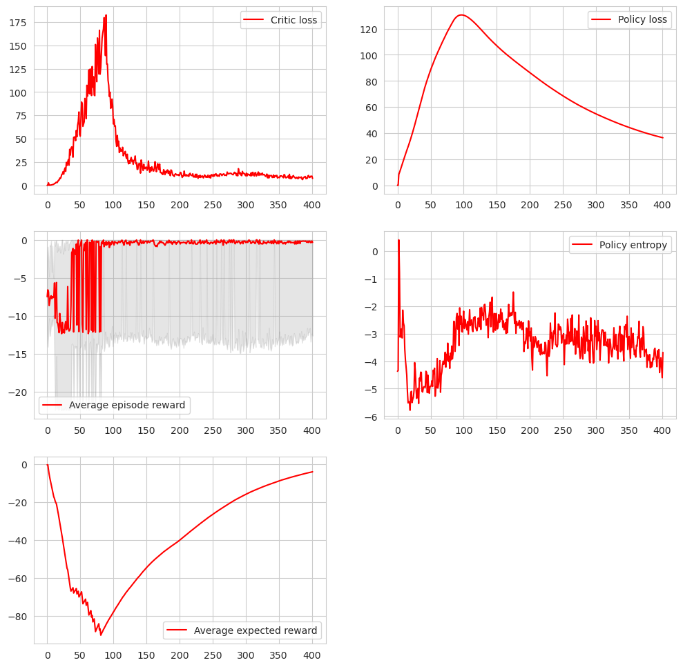

Training tutorial
Figure1
Introduction
Unlike supervised training algorithms, DRL and your success in training a model for your environment strongly depends on the details of implementation of your training algorithm. In this tutorial we use DDPG, however we do not follow the publication in details.The key idea of the algorithm is that we have two neural networks: the policy network and critic network. Policy network is the one that generates action of the agent using the observer state of the environment. The critic network, instead takes the state and generated action as inputs and tries to predict the future cumulative reward of such action in this state.
The training step has two substeps. First we compute gradient for the critic neural network and make a gradient descent step. The problem of training the critic is supervised, because we know the next state and action and we compare predictions of the critic for the current state and current action with the next state and the next action. They should differ by a discounted reward.
Then we optimize policy using the critic network as a loss function: the policy should output the best possible action, therefore maximizing critic prediction.
The additional target critic and policy networks are used for the stability of the algorithm. Figure1 shows the outline of the algorithm. Code1 is the corresponding code for one step of the training process (implemented in DDPG.py).
Code 1: DDPG.py.
def train(self, buffer):
b_state, b_action, b_reward, b_state_next, b_term = buffer.sample(self.batch_size)
with torch.no_grad():
action_target = self.policy_target(b_state_next)
Q_prime = self.critic_target(b_state_next, action_target)
self.opt_critic.zero_grad()
Q = self.critic(b_state, b_action)
L_critic = self.critic_loss(Q, b_reward + self.gamma*Q_prime*(1.0-b_term))
L_critic.backward()
self.opt_critic.step()
self.opt_policy.zero_grad()
action = self.policy(b_state)
L_Q = -1.0*self.critic(b_state, action).mean()
L_Q.backward()
self.opt_policy.step()
self.soft_update(self.critic, self.critic_target)
self.soft_update(self.policy, self.policy_target)
return L_critic.item(), L_Q.item()
Training cycle
The main training cycle is rather simple (Code2), however the important detail here is the warmup period. We sample random actions to give initial training some information on rewards and states of the environment. Because the policy network relies on critic for training, without this step the critic neural network will likely overfit the initial state and action and won't provide any useful direction to impove the policy.Code2 also shows that we place state, action, reward and the next state into the buffer, from which we sample during the training step.
Code 2: DDPG training cycle (main.py)
for training_step in range(num_train + num_warmup):
if training_step<=num_warmup:
action = ddpg.random_action().to(dtype=state.dtype, device=state.device)
else:
action = ddpg.select_action(state, noise)
state_next, reward, term, _ = env.step(action.cpu())
state_next = state_next.to(dtype=state.dtype, device=state.device)
buffer.append(state, action, reward, state_next, term)
if training_step>num_warmup:
critic_loss, policy_loss = ddpg.train(buffer)
state = state_next.clone()
Normalizing the environment
Often we want to scale the reward as well as action space of the environment. In this particular case just action normalization is enough to train the policy. In the case you want to scale the reward, do not change the scaling factor during training, because critic tries to predict the values of the reward. Also, do not subtract reward average, because it makes algorithm think that it's getting rewards where there are none.Code 4: Environment scaling
main.py:
GODOT_BIN_PATH = "InvPendulum/InvPendulum.server.x86_64"
env_abs_path = "InvPendulum/InvPendulum.server.pck"
env = NormalizedEnv(InvPendulumEnv(exec_path=GODOT_BIN_PATH, env_path=env_abs_path))
NormalizedEnvironment.py:
class NormalizedEnv(gym.ActionWrapper):
def action(self, action):
act_k = torch.from_numpy(self.action_space.high - self.action_space.low)/2.0
act_b = torch.from_numpy(self.action_space.high + self.action_space.low)/2.0
return act_k * action + act_b
def reverse_action(self, action):
act_k_inv = 2.0/(self.action_space.high - self.action_space.low)
act_b = (self.action_space.high + self.action_space.low)/2.0
return act_k_inv * (action - act_b)
Figure 2: Plots
What to plot
1.Critic loss: you want to be sure that the critic is able to predict future rewards, because it provides the information for training the policy itself. If this step does not work, the whole algorithm breaks. However if the loss is zero, then your critic overfitted to a small state space, which is equally bad.2.Average episode reward: this is the main outcome of the training algorithm, you'll have to look at it anyway.
3.Policy entropy: this is very informative metric of how sure your policy is in its predictions. You can detect overfitting of the policy if the entropy has stable value. Generally it's hard to get entropy for DDPG algorithm, but in this case we can sample the state space and approximate the entropy.
Figure2 shows these plots for a successful training run.